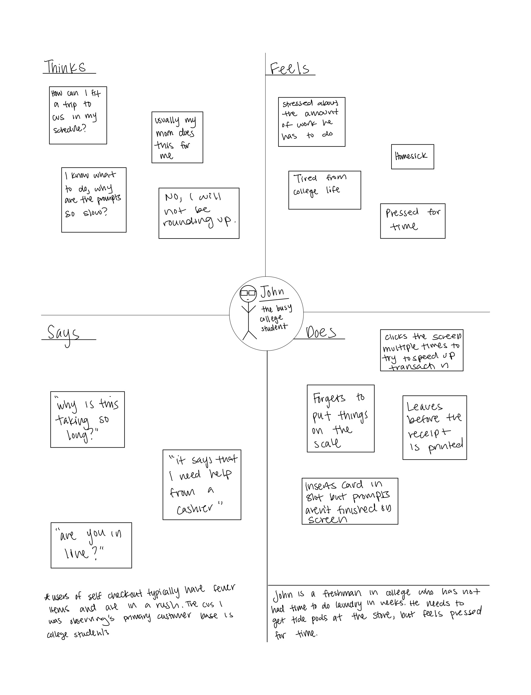

A/B testing and eye tracking are important methods that help you gather information on what design considerations can increase the usability of your website.
A/B testing, also known as split testing, refers to a randomized experimentation process where different versions of a webpage are shown to different visitors at the same time to determine which version has the best metrics like user retention, time to checkout, etc..
Eye tracking technology helps observe and measure eye movements to see where subjects focus there visual attention. Helping to determine what aspects of a webpage they engage with and what they ignore.
This project focuses more on using eye tracking technology to inform design considerations for a bakery website.
to get a better understanding of the interface, I started off by observing customers using the self checkout machine.
Each user went through the self checkout process relatively quickly and smoothly. Oftentimes, a user would click for the next step before the machine was able to finish saying the previous instruction, and there were some instances of users putting their cards in the slot before the machine prompted them to. A few of the users paused before setting things down on the scale or didn’t put things on the scale at all, delaying the process. Overall it was a pretty seamless sequence of tapping on the screen and scanning new items.
After observing users, I conducted 3 user interviews asking about their experience with the interface.
Once I got a better dea of what types of users were using the self checkout machines and what their experiences were, I was ready to create personas.
After creating these personas, I then developed a storyboard illustrating John's interaction with the interface.

Through the process of creating user personas and developing a storyboard I was able to document practical information about users, such as their different needs and motivations for using the checkout interface. With this information, the next possible step could be to develop a roadmap on how to deliver the end product with these user goals in mind, and iterate through ideas on how to solve pain points.